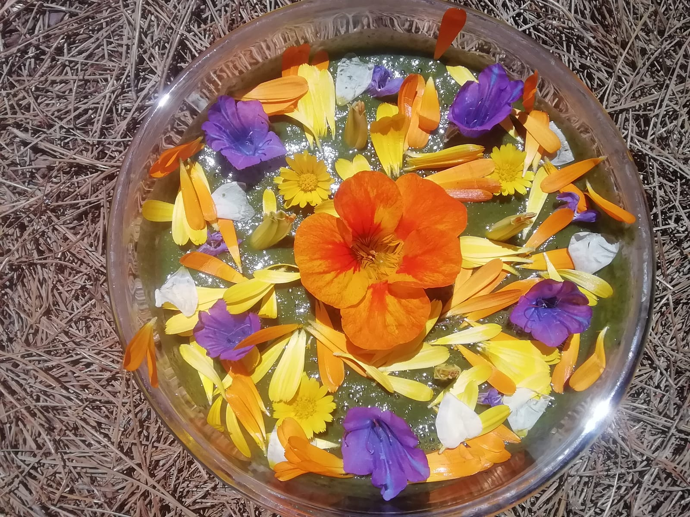

Unterstütze deine Selbstheilungskräfte & deine Verjüngung!
Mit all diesen täglichen, einfachen Therapievorschlägen, arbeiten wir seit Jahren mit positivem Energie Gewinn...
< naturelle Impfung > Heil-Nahrung 👽
Chlorophyll Energiegetränk
Wildgräser / Wildkräuter / Baumblätter
Gräser & Kräuter im Morgentau bevor die Sonnestahlen Sie erreichen, mit deinen Fingernägeln oder einem Keramikmesser abernten.
In einen guten Entsafter (z. B. Angeljuicer) o. mit Handarbeit in einen Steinmörser geben & zerklopfen / mit etwas Quellwasser zerreiben, durch ein Hanfsäcklein pressen...
Das Alfalfa Grün (Kleesorte) hat sehr tiefe Wurzeln, die Mineralien aus der Erdmutter lösen können.
Wir sammeln unsere Wildkräuter im Waldbereich mit humusreichem Böden, der alle wichtigen Mineralien & Spurenelementen zur Verfügung stellt!
Chlorophyll Smoothie "Ayurvedisch" 🕉️
(süß, sauer, scharf, salzig, herb, bitter, zusammenziehend)
Wildkräuter /junge Baumblätter Mischung aller Geschmachsempfindungen.
Bevor die Sonnenstrahlen die zarten Blätter erreichen, mit den Fingernägel oder einem Keramikmesser abernten. Rasch in einen Hochgewschwindigkeits Mixer geben & zusammen mit frischen saisonalen Früchten, ca. eine Minute zermixen.
Damit es optimal bioverfügbar wird. Mischungsvehältnis: Wildkräuter, Baumblätter / frische Früchte 3:1
Da das wichtige Einspeicheln / kauen nicht vergessen werden darf, wäre es von Vorteil, den Smoothie noch reichlich mit Früchtestückchen & Blümchen zu garnieren, kunterbuntes Mandala.
Segne deine kosmische Nahrung, mit einem Manta...
Moor-Pulver/ alte abgestorbene Humusböden, sind mineralienreich & enthalten Huminsäure welche Roundup Monsanto-Gifte ausleiten können!!!
Zellreinigendes Ayurvedisches 🕉️ Heilwasser
Einen Kupferkessel über Nacht mit Quellwasser (o. gefilterten Trinkwasser) befüllen.
Am nächsten Morgen ca. 15 Minuten köcheln lasen, evtl. abfüllen optimal in Glasthermoskanne, den Tag über lauwarm zu sich nehmen.
Kann auch zur Einnahme von Nahrungsergänzung / Mineralien lauwarm verwendet werden, um es tiefer in die Körpergewebezellen zu transportieren...
Natürliche Probiotika (Darmgesundheit)!!!
- Baum-Harz-Tee...(Veganes Propolis)
Baumharz (Kiefer, Fichte, ect.) mit lauwarmen Quellwasser übergießen, über Nacht ziehen lassen, durch ein Teesieb filtern - selbst produziertes Sauer-Kraut mit Himalaya Kristallsalz... (Milchsäurebakterien)